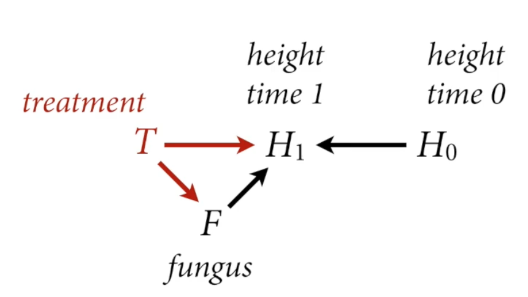

# load data and copy
library(rethinking)
data("WaffleDivorce")
d <- WaffleDivorceLec 5: Elemental Confounds (2023)
Correlation is common in nature, causation is sparse
Estimand: Ideal Cake
Estimator: Recipe
Estimate: Reality Cake
Statistical recipes must defend against confounding
| Are X and Y independent? | Is there association after stratification? | |||
|---|---|---|---|---|
| The Fork | X ← Z → Y | |||
| The Pipe | X → Z → Y | |||
| The Collider | X → Z ← Y | |||
| The Descendant | X → Z → Y A |
The Fork
\[X \leftarrow Z \rightarrow Y\]
X and Y are associated (Y is not independent of X)
Share a common cause Z
Once stratified by Z, no association \(Y \mathrel{\unicode{x2AEB}} X|Z\)
# simple simulation with discrete data (0s,1s)
n <- 1000
Z <- rbern(n, 0.5)
X <- rbern(n, (1-Z)*0.1 + Z*0.9)
Y <- rbern(n, (1-Z)*0.1 + Z*0.9)
table(X,Y) Y
X 0 1
0 424 100
1 77 399cor(X,Y)[1] 0.6466507table(X,Y,Z), , Z = 0
Y
X 0 1
0 419 47
1 40 2
, , Z = 1
Y
X 0 1
0 5 53
1 37 397cor(X[Z==0],Y[Z==0])[1] -0.04966446cor(X[Z==1], Y[Z==1])[1] 0.001100326# simulation with continuous data, showing the fork confound
cols <- c(4,2)
N <- 300
Z <- rbern(N)
X <- rnorm(N, 2*Z-1) # Z=1 will be positive, Z=0 will be negative
Y <- rnorm(N, 2*Z - 1)
plot(X,Y, col=cols[Z+1], lwd=3)
abline(lm(Y[Z==1]~X[Z==1]), col=2,lwd=3) # red when Z == 1
abline(lm(Y[Z==0] ~ X[Z==0]), col=4, lwd=3) # blue when Z == 0
abline(lm(Y~X), lwd=3) # Regression line for total sample, ignoring Z
# Stratefying by common causeFork Example
Why do regions of the USA with higher rates of marriage also have higher divorce rates?
M → D ?
Another variable: age at marriage
library(dagitty)
ldag5.1 <- dagitty("dag{
A -> D
A -> M
M -> D }")
coordinates(ldag5.1) <- list(x=c(M=0, A=1, D=2), y=c(D=0,A=1, M=0))
drawdag(ldag5.1)
Estimand: Causal effect of marriage rate on divorce rate
Fork: M ← A → D
- To estimate causal effect of M, need to break the fork. By stratifying by A
What does it mean to stratify by a continuous variable?
It depends
How does A influence D? What is \(D=f(A,M)\)?
In linear regression:
\[D_i \sim {\sf Normal}(µ_i, \sigma)\]
\[µ_i=\alpha + \beta_mM_i + \beta_aA_i\]
Every value of A produces a different relationship between D and M
\(µ_i= (a + \beta_AA_i) + \beta_MM_i\)
- Where \(a + \beta_AA_i\) is the intercept
Statistical Fork
To stratify by A (age at marriage), include as term in linear model
We are going to standardize the variables (convenient in linear regression)
standardize: make the mean 0 and divide by the SD
Computation works better
Easy to choose sensible priors
Prior Predictive Simulation
n <- 20
a <- rnorm(n,0,0.2)
bM <- rnorm(n, 0, 0.5)
bA <- rnorm(n, 0, 0.5)
plot(NULL, xlim=c(-2,2), ylim=c(-2,2),xlab="Median age of marriage (std)", ylab="Divorce rate (std)")
Aseq <- seq(-3.3, len=30)
for (i in 1:n) {
mu <- a[i] + bA[i] * Aseq
}
for (i in 1:n) {
mu <- a[i] + bA[i] * Aseq
lines(Aseq, mu, lwd=2, col=2)
}
Analyze Data
# create data list with standardized vals
dat <- list(
D = standardize(d$Divorce),
M = standardize(d$Marriage),
A = standardize(d$MedianAgeMarriage)
)
m_DMA <- quap(
alist(
D ~ dnorm(mu, sigma),
mu <- a + bA * A + bM * M,
a ~ dnorm(0,0.2),
bM ~ dnorm(0,0.5),
bA ~ dnorm(0,0.5),
sigma ~ dexp(1)
), data=dat
)
plot(precis(m_DMA))
plot(precis(model_name)) Caterpillar Plot - good for visualizing summary of model with standardized variables
What’s the causal effect of M?
Just because the interval of M var includes zero does not mean that the causal effect of M is zero!
People will often report the slope of M as the causal effect of M, which is not terrible, but it’s not actually right. In a perfectly linear model. But nonlinear models complicate things.
bA is quite negative, though same level of uncertainty in both slopes (bA and bM)
Simulating Interventions
Causal effect is a manipulation of the generative model, an intervention
\(p(D|do(M)\) means the distribution of D when we intervene (“do”) M
This implies deleting all arrows into M and simulating D
ldag5.2 <- dagitty("dag{
A -> D
M -> D }")
coordinates(ldag5.2) <- list(x=c(M=0, A=1, D=2), y=c(D=0,A=1, M=0))
drawdag(ldag5.2)
# Extract samples from the model
post <- extract.samples(m_DMA)
# Sample A from the data, the empirically observed median age of marriage vals with Replacement
# 1000 states
n <- 1e3
As <- sample(dat$A, size=n, replace=TRUE)
# Simulate D for M=0 (sample mean)
DM0 <- with(post, # with makes it so we don't have to use $ to access columns
rnorm(n, a + bM*0 + bA*As, sigma))
# Simulate D for M=1 (+1 SD), use the *same* A values
DM1 <- with(post,
rnorm(n, a + bM*1 + bA * As, sigma))
# Compute the constrast
M10_contrast <- DM1 - DM0
dens(M10_contrast, lwd=4, col=2, xlab="effect of 1SD increase in M")
Posterior distribution of the causal effect of intervening on M to inc it by one standard deviation on divorce rate. Centered on Zero, but could be big or small → can’t say that there’s no effect (variability on population error)
But certainly it’s a much smaller effect that the causal effect of A on D
Need to run another model
Causal effect of A?
How to estimate causal effect of A, \(p(D|do(A))\)
No arrows to delete for intervention
Fit new model that ignores M, then simulate any intervention you like
Why does ignoring M work?
- Because A → M → D is a “pipe” (remember from last lecture with the Howell weight, age, height data)
The Pipe
X and Y are associated (Y is not independent of X)
The influence of X on Y transmitted through Z
Once stratified by Z, no association \(Y \mathrel{\unicode{x2AEB}} X|Z\)
\[X \rightarrow Z \rightarrow Y\]
n <- 1e3
X <- rbern(n, 0.5)
Z <- rbern(n, (1-X)*0.1 + X*0.9)
Y <- rbern(n, (1-Z)*0.1 + Z*0.9)
table(X,Y) Y
X 0 1
0 417 95
1 89 399cor(X, Y)[1] 0.6319395table(X[Z==0], Y[Z==0])
0 1
0 410 49
1 41 7cor(X[Z==0], Y[Z==0])[1] 0.03650009table(X[Z==1], Y[Z==1])
0 1
0 7 46
1 48 392cor(X[Z==1], Y[Z==1])[1] 0.02261425Everything that Y knows about X, is known by Z. Once you learn Z, there’s nothing more to learn about the association between X and Y (because all the assoication info passes thru Z).
cols <- c(4,2)
N <- 300
X <- rnorm(N) # continuous
Z <- rbern(N, inv_logit(X)) # discrete Z
Y <- rnorm(N, 2*Z-1) # continuous
plot(X, Y, col=cols[Z+1], lwd=1)
abline(lm(Y[Z==1] ~ X[Z==1]), col=2, lwd=3)
abline(lm(Y[Z==0] ~ X[Z==0]), col=4, lwd=3)
abline(lm(Y ~ Z),lwd=3)
Pipe example
plants growth experiment
100 plants
half treated with anti-fungal
measure growth and fungus
Estimand: Causal effect of treatment on plant growth
Scientific Model
F → H1 (height time 1) ← H0 (height time 0)

Statistical Model
Estimand: Total causal effect of T
The path \(T \rightarrow F \rightarrow H_1\) is a pipe
Should we stratify by F?
NO, that would block the pipe
The treatment flow
Post-treatment bias: Consequences of treatment should not usually be included in the estimator
The Collider
\[X \rightarrow Z \leftarrow Y\]
X and Y are not associated (don’t share causes, independent of each other)
X and Y both influence Z
Once stratified by Z, X and Y are associated
# Discrete simmulation
n <- 1000
X <- rbern(n, 0.5)
Y <- rbern(n, 0.5)
Z <- rbern(n, ifelse(X+Y>0, 0.9, 0.2))
# Z = 1 90% of time when X+Y is greater than 0; but when X+Y<0, Z=1 20% of the time
table(X,Y) Y
X 0 1
0 226 274
1 250 250cor(X,Y) # No correlation[1] -0.04805539table(X[Z==0], Y[Z==0])
0 1
0 187 18
1 19 30cor(X[Z==0], Y[Z==0])[1] 0.5285871table(X[Z==1], Y[Z==1])
0 1
0 39 256
1 231 220cor(X[Z==1], Y[Z==1])[1] -0.3866233# continuous simulation
cols <- c(4,2)
N <- 300
X <- rnorm(N) # continuous
Y <- rnorm(N) # continuous
Z <- rbern(N, inv_logit(2*X+2*Y-2)) # discrete Z
plot(X, Y, col=cols[Z+1], lwd=1)
abline(lm(Y[Z==1] ~ X[Z==1]), col=2, lwd=3)
abline(lm(Y[Z==0] ~ X[Z==0]), col=4, lwd=3)
abline(lm(Y ~ X),lwd=3)
Collider Examples
Some biases arise from selection (data collection)
Suppose: 200 grant applications
Each scored on newsworthiness and trustworthiness
No association in population
Strong association after selection:
negative association in the funded grants between trustworthiness and newsworthiness: the most newsworthiness have below average rigor in this applicant pool
But not a feature of how grants are written, but a feature of selection (once you stratify by whether it was funded or not)
\[N \rightarrow A \leftarrow T\]
Awarded grants must have been sufficiently newsworthy and trustworthy. Few grants are high in both. Results in a negative association, conditioning on award
Similar examples:
restaurants survive by having good food or a good location => bad food in good locations
Restaurants must survive by either one of two ways: have good food, or good location. (can be both, but pretty rare)
Induce slight conditioning on collider (nothing about being in a bad neighborhood that makes the food good)
Actors can succeed by being attractive or by being skilled => attractive actors are less skilled (selection bias of seeing only those actors that succeed, being attractive is not causally related to being bad at acting).
Endogenous Colliders
Collider bias can arise thru statistical processing (e.g., how you define the estimator)
Endogenous selection: if you condition on (stratify by) a collider, creates phantom non-causal associations
Example: Does age influence happiness?
Age and Happiness
Estimand: Influence of age on happiness
Possible confound: Marital status
Suppose age has zero influence on happiness
But both age and happiness influence marital status (happier people more likely to be married, older you are, the more chances of marriage)
\[H \rightarrow M \leftarrow A\]
Stratified by marital status, negative association between age and happiness
- If you included marital status in your estimator as a control, it would in fact induce a confound: a negative association between age and happiness (just not true)
The Descendant
How a descendant behaves depends upon what it is attached to
Z and Y are causally associated thru Z
A (descendant) holds info about Z
If we stratify by A, X and Y are less associated
n <- 1000
X <- rbern(n, 0.5)
Z <- rbern(n, (1-X)*0.1 + X*0.9)
Y <- rbern(n, (1-Z)*0.1 + Z*0.9)
A <- rbern(n, (1-Z)*0.1 + Z*0.9)
table(X,Y) Y
X 0 1
0 391 87
1 94 428cor(X,Y)[1] 0.6375842table(X[A==0], Y[A==0])
0 1
0 349 43
1 39 46cor(X[A==0], Y[A==0])[1] 0.4238429table(X[A==1], Y[A==1])
0 1
0 42 44
1 55 382cor(X[A==1], Y[A==1])[1] 0.3457196Same as pipeline, X influences Z and Z influence Y. But A doesn’t influence anything.
Then, we stratify by A while ignoring Z, we end up messing up the experiment → you get the wrong estimate
Descendants are Everywhere
Many measurements are proxies of what we wish we could measure
Factor analysis
Measurement error
Social networks